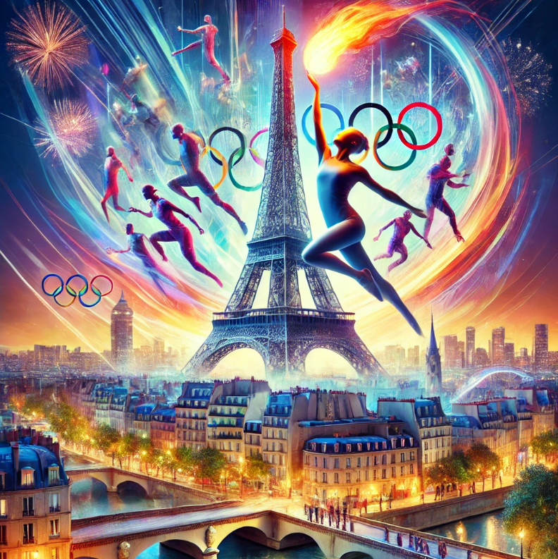
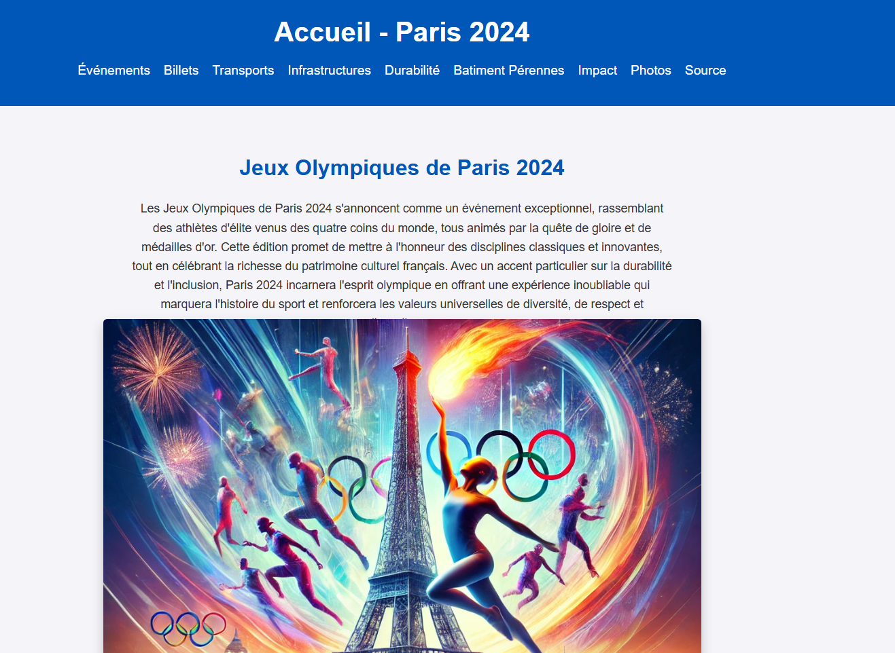
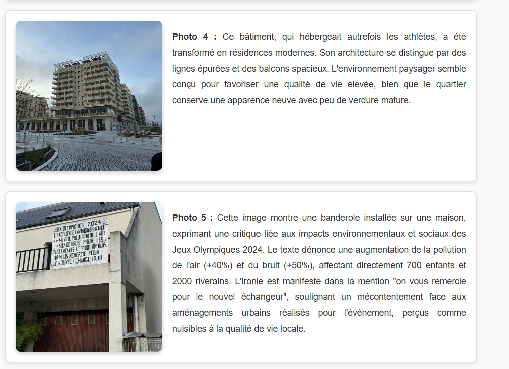

Projet web collaboratif
Site web collaboratif — Paris 2024
Projet réalisé en équipe autour des Jeux Olympiques. L’objectif était de créer un site multi-pages en HTML/CSS avec une navigation claire, un contenu illustré et une cohérence visuelle.



Ce que j’ai fait
- Mise en page HTML/CSS
- Organisation des contenus
- Navigation entre les pages
- Intégration d’images et harmonisation visuelle
Ce que cela montre
- Construction d’un site multi-pages
- Lisibilité et structure visuelle
- Capacité à travailler en équipe
- Présentation claire d’un sujet